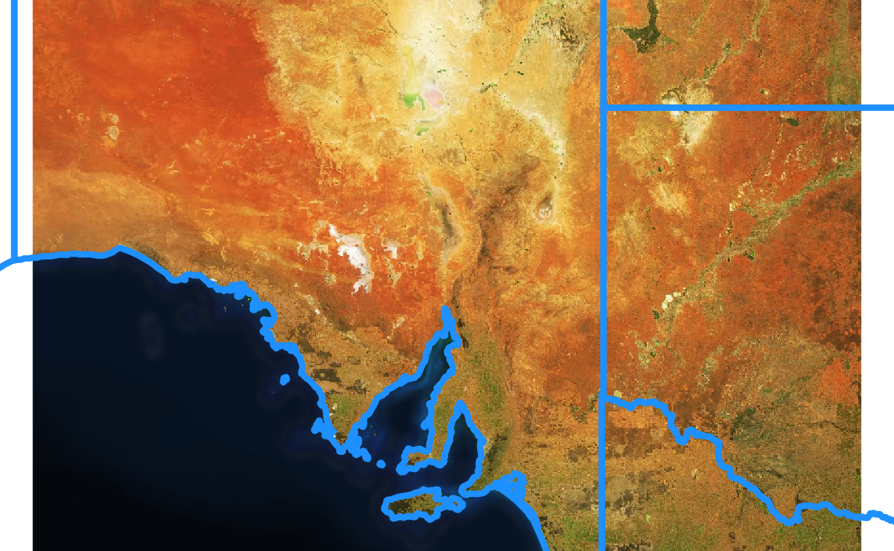

The goal of ceramic is to obtain web map tiles for later re-use. Many tools for imagery services treat the imagery as transient, but here we take control over the raw data itself.
Goals
Very much WIP.
- control download of raw tiles (we have this!)
- allow lazy read access to tile caches
- generalize across providers
- provide interactive means to build access to imagery
Example
This complete example gets tiled imagery that we can use as real data.
The code here
- generates a bounding box in longitud-latitude
- uses slippymath to find sensible tiles for the region
- downloads them to a local cache
- georeferences them and merges the tiles into a sensible raster object
library(sf) ## st_bbox, st_crs
#> Linking to GEOS 3.6.2, GDAL 2.3.2, PROJ 4.9.3
#> Linking to GEOS 3.6.1, GDAL 2.2.3, PROJ 4.9.3
library(slippymath)
my_bbox <-
st_bbox(c(xmin = 130,
xmax = 146,
ymin = -36,
ymax = -28),
crs = st_crs("+proj=longlat +ellps=WGS84"))
library(purrr) ## is_null clashes with testthat::is_null
tile_grid <- slippymath:::bb_to_tg(my_bbox, max_tiles = 36)
zoom <- tile_grid$zoom
mapbox_query_string <-
paste0("https://api.mapbox.com/v4/mapbox.satellite/{zoom}/{x}/{y}.jpg90",
"?access_token=",
Sys.getenv("MAPBOX_API_KEY"))
library(ceramic)
files <- unlist(down_loader(tile_grid, mapbox_query_string))
tibble::tibble(filename = gsub(normalizePath(rappdirs::user_cache_dir(), winslash = "/"),
"",
normalizePath(files, winslash = "/")))
#> # A tibble: 24 x 1
#> filename
#> <chr>
#> 1 /.ceramic/api.mapbox.com/v4/mapbox.satellite/7/110/74.jpg90
#> 2 /.ceramic/api.mapbox.com/v4/mapbox.satellite/7/111/74.jpg90
#> 3 /.ceramic/api.mapbox.com/v4/mapbox.satellite/7/112/74.jpg90
#> 4 /.ceramic/api.mapbox.com/v4/mapbox.satellite/7/113/74.jpg90
#> 5 /.ceramic/api.mapbox.com/v4/mapbox.satellite/7/114/74.jpg90
#> 6 /.ceramic/api.mapbox.com/v4/mapbox.satellite/7/115/74.jpg90
#> 7 /.ceramic/api.mapbox.com/v4/mapbox.satellite/7/110/75.jpg90
#> 8 /.ceramic/api.mapbox.com/v4/mapbox.satellite/7/111/75.jpg90
#> 9 /.ceramic/api.mapbox.com/v4/mapbox.satellite/7/112/75.jpg90
#> 10 /.ceramic/api.mapbox.com/v4/mapbox.satellite/7/113/75.jpg90
#> # ... with 14 more rows
library(raster)
#> Loading required package: sp
br <- lapply(files, raster::brick)
for (i in seq_along(br)) {
br[[i]] <- setExtent(br[[i]],
mercator_tile_extent(tile_grid$tiles$x[i], tile_grid$tiles$y[i], zoom = zoom))
}
im <- purrr::reduce(br, raster::merge)
plotRGB(im)
# devtools::install_github("mdsumner/ozmaps")
dat <- sf::st_transform(ozmaps::ozmap_states, "+proj=merc +a=6378137 +b=6378137")
plot(dat$geometry, add = TRUE, lwd = 5, border = "dodgerblue")
There is a helper function to find existing tiles.
ceramic_tiles(zoom = 7, type = "mapbox.satellite")
#> # A tibble: 24 x 7
#> tile_x tile_y zoom type version source
#> <int> <int> <int> <chr> <chr> <chr>
#> 1 110 74 7 mapb… v4 api.m…
#> 2 110 75 7 mapb… v4 api.m…
#> 3 110 76 7 mapb… v4 api.m…
#> 4 110 77 7 mapb… v4 api.m…
#> 5 111 74 7 mapb… v4 api.m…
#> 6 111 75 7 mapb… v4 api.m…
#> 7 111 76 7 mapb… v4 api.m…
#> 8 111 77 7 mapb… v4 api.m…
#> 9 112 74 7 mapb… v4 api.m…
#> 10 112 75 7 mapb… v4 api.m…
#> # ... with 14 more rows, and 1 more variable: fullname <fs::path>and an internal function to convert these to an extent useable directly by raster:
ceramic_tiles(zoom = 7, type = "mapbox.satellite") %>%
dplyr::slice(1:5) %>%
ceramic:::add_extent() %>% purrr::transpose() %>%
purrr::map(~raster::extent(unlist(.x[c("xmin", "xmax", "ymin", "ymax")])))
#> [[1]]
#> class : Extent
#> xmin : 14401959
#> xmax : 14715045
#> ymin : -3443947
#> ymax : -3130861
#>
#> [[2]]
#> class : Extent
#> xmin : 14401959
#> xmax : 14715045
#> ymin : -3757033
#> ymax : -3443947
#>
#> [[3]]
#> class : Extent
#> xmin : 14401959
#> xmax : 14715045
#> ymin : -4070119
#> ymax : -3757033
#>
#> [[4]]
#> class : Extent
#> xmin : 14401959
#> xmax : 14715045
#> ymin : -4383205
#> ymax : -4070119
#>
#> [[5]]
#> class : Extent
#> xmin : 14715045
#> xmax : 15028131
#> ymin : -3443947
#> ymax : -3130861Please note that the ‘ceramic’ project is released with a Contributor Code of Conduct. By contributing to this project, you agree to abide by its terms.